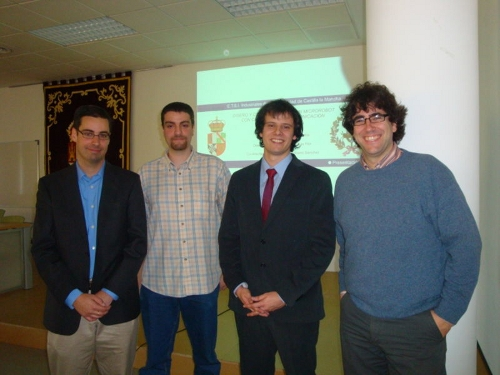
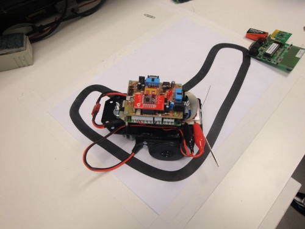

El pasado 4 de diciembre me invitaron a participar como miembro del tribunal en la defensa del proyecto fin de carrera titulado Diseño y construcción de un microrobot con capacidad para comunicación inalámbrica en la Escuela Técnica Superior de Ingenieros Industriales de Ciudad Real, en la Universidad de Castilla la Mancha (UCLM). El proyecto lo realizó Enrique Holgado, dirigido por Francisco Ramos.

En este proyecto, diseñaron e implementaron el robot UCLMin (foto anterior) que incorpora comunicaciones inalámbricas a través de Miwi, una variante de ZigBee hecha por Microchip. Partieron de un Skybot, al que sustituyeron la Skypic por un diseño propio hecho con el PIC18.
Con el nacimiento del UCLMin, el grupo de Robótica y Automática ha comenzado a desarrollar una plataforma para investigar en el apasionante mundo de los robots colaborativos.
Muchas gracias a Enrique Holgado y Francisco Ramos por haberme invitado 🙂